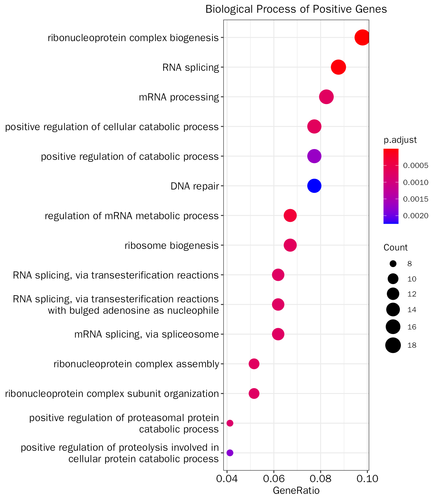

PrincipalComponentAnalysis
PrincipalComponentAnalysis.RmdIntroduction
Principal component analysis (PCA) is an unsupervised linear dimensionality reduction algorithm, and it can retain most of the variation in the data set. Based on these properties, PCA has two main uses in RNA-seq analysis:
- Quality control:
- Evaluate sample similarity across different conditions
- Check batch information
- Detect outliers
- Reveal biologically relevant information
For Quality Control, We have already covered in the previous vignette, here, we will focus on the “Reveal biologically relevant information”!
Example data
This vignette follows the previous “Quality Control” vignette, so we will used the results output by “Quality Control” vignette.
# library
suppressWarnings(suppressMessages(library(DEbPeak)))
# load data
load(file = "/home/songyabing/R/learn/tmp/DEbPeak/example.RData")PCA
We will perform PCA with prcomp, and remove outlier samples detected by previous QCPCA.
# conduct PCA
pca.res=PCA(deobj = dds,remove.sample = outlier.res$outlier,transform.method = "rlog")
# get basic plots
basic.plots=PCABasic(pca.res,colby="condition",legend.pos = "right")Scree plot
A Scree Plot is a simple line plot that shows the total amount of variance that can be explained by each individual PC (Y-axis shows explained variance, X-axis shows the number of PCs). It can be used to determine the number of PCs to be explored for downstream analysis. Here, we created a cumulative scree plot based on PCAtools, the red dashed line represents 90% explained variance.
basic.plots[["screen"]]Biplot
Biplot contains informations from two aspects:
- sample similarity (point)
- how strongly each gene influences a principal component (vector)
- the vector will have projections on PCs, and the project values on each PC show how much weight they have on that PC. Positive values indicate that a vector/gene and a principal component are positively correlated whereas negative values indicate a negative correlation.
- the angle between vectors indicates how vectors/genes correlate with one another: a small angle implies positive correlation, a large one suggests negative correlation, and a 90 degree angle indicates no correlation between two vectors/genes.
The biplot is created based on PCAtools:
basic.plots[["biplot"]]PC pairs plot
The PC pairs plot (based on PCAtools) will show sample similarity across different PC combination:
basic.plots[["pairs"]]
Lodding-related analysis
PCA loadings are the coefficients of the linear combination of the original variables from which the principal components (PCs) are constructed, which are simply the weights of the original variables. Here, lodding indicates how strongly each gene influences a principal component (Similar to vector in Biplot, but here we will evaluate each individual PC). Loadings range from -1 to 1, a high absolute value indicates that the gene strongly influences the component, and the sign of a loading indicates whether a whether a gene and a principal component are positively or negatively correlated.
The lodding-related analysis in DEbPeak contains four aspects:
- Loading bar plot: Visualize the genes with top n positive or negative loaddings of PCs
- Loading heatmap: Log2-normalized counts of the genes with top n positive or negative loaddings of PCs across samples
- Export genes: Export the genes with top n positive or negative loaddings of PCs
- GO enrichment: GO enrichment on the genes with top n positive or negative loaddings of PCs

Export genes
# export loading genes on PC1 and PC2 (200 positive genes and 200 negative genes)
loading.gene.df=ExportPCGenes(pca = pca.res, pc = 1:2, gene.num = 200)
head(loading.gene.df)## PC Gene Loadding Type
## 1 PC1 ENSMUSG00000038252.13 0.02543092 Positive
## 2 PC1 ENSMUSG00000027496.15 0.02457406 Positive
## 3 PC1 ENSMUSG00000030795.18 0.02395752 Positive
## 4 PC1 ENSMUSG00000031865.16 0.02373083 Positive
## 5 PC1 ENSMUSG00000027404.15 0.02319317 Positive
## 6 PC1 ENSMUSG00000063511.11 0.02220398 PositiveGO enrichment
# save results to working folder
# LoadingGO(pca.res,gene.type="ENSEMBL",go.type="BP",padj.method="BH",save = T)
# return list
loading.go.results=LoadingGO(pca.res,gene.type="ENSEMBL",go.type="BP",padj.method="BH",str.width = 50,save = F)Genes with positive loaddings
# positive loading genes
positive_go_results=loading.go.results[["Positive"]][["GO"]]
head(positive_go_results[["table"]])## ID Description
## GO:0022613 GO:0022613 ribonucleoprotein complex biogenesis
## GO:0008380 GO:0008380 RNA splicing
## GO:1903311 GO:1903311 regulation of mRNA metabolic process
## GO:0031331 GO:0031331 positive regulation of cellular catabolic process
## GO:0042254 GO:0042254 ribosome biogenesis
## GO:0006397 GO:0006397 mRNA processing
## GeneRatio BgRatio pvalue p.adjust qvalue
## GO:0022613 19/194 409/23328 1.667451e-09 4.440423e-06 3.787747e-06
## GO:0008380 17/194 386/23328 2.733412e-08 3.639538e-05 3.104580e-05
## GO:1903311 13/194 266/23328 3.862626e-07 3.428724e-04 2.924753e-04
## GO:0031331 15/194 396/23328 1.243752e-06 6.850558e-04 5.843628e-04
## GO:0042254 13/194 296/23328 1.286248e-06 6.850558e-04 5.843628e-04
## GO:0006397 16/194 462/23328 1.753069e-06 7.115007e-04 6.069208e-04
## geneID
## GO:0022613 Snrpb/Sf3a2/Hsp90ab1/Mybbp1a/Ruvbl2/Ddx39b/Ddx47/Ppan/Rcl1/Drosha/Rpl6/Puf60/Ddx54/Ddx27/Mrpl10/Ran/Noc2l/Abt1/Nop2
## GO:0008380 Fus/Snrpb/Snrnp70/Sf3a2/Srsf4/Ddx39b/Khsrp/Scaf1/Ddx47/Txnl4a/Snrpa/Snrpn/Puf60/U2af2/Taf15/Mettl3/Sf1
## GO:1903311 Fus/Snrnp70/Srsf4/Khsrp/Upf1/Fto/Supt5/Puf60/U2af2/Taf15/Mettl3/Gtpbp1/Sf1
## GO:0031331 Aurka/Khsrp/Upf1/Fto/Cdc20/Supt5/Fzr1/Bag6/Mettl3/Bcap31/Rnf185/Gtpbp1/Psen1/Hmox1/Gsk3a
## GO:0042254 Mybbp1a/Ddx47/Ppan/Rcl1/Drosha/Rpl6/Ddx54/Ddx27/Mrpl10/Ran/Noc2l/Abt1/Nop2
## GO:0006397 Snrpb/Snrnp70/Sf3a2/Srsf4/Ddx39b/Khsrp/Scaf1/Ddx47/Txnl4a/Snrpa/Supt5/Snrpn/Puf60/U2af2/Mettl3/Sf1
## Count
## GO:0022613 19
## GO:0008380 17
## GO:1903311 13
## GO:0031331 15
## GO:0042254 13
## GO:0006397 16
positive_go_results[["plot"]]
Genes with negative loaddings
# negative loading genes
negative_go_results=loading.go.results[["Negative"]][["GO"]]
head(negative_go_results[["table"]])## ID
## GO:0032535 GO:0032535
## GO:0045666 GO:0045666
## GO:0031346 GO:0031346
## GO:0010976 GO:0010976
## GO:0048813 GO:0048813
## GO:0010769 GO:0010769
## Description
## GO:0032535 regulation of cellular component size
## GO:0045666 positive regulation of neuron differentiation
## GO:0031346 positive regulation of cell projection organization
## GO:0010976 positive regulation of neuron projection development
## GO:0048813 dendrite morphogenesis
## GO:0010769 regulation of cell morphogenesis involved in differentiation
## GeneRatio BgRatio pvalue p.adjust qvalue
## GO:0032535 14/186 413/23328 6.228504e-06 0.006598163 0.005761002
## GO:0045666 15/186 472/23328 6.270266e-06 0.006598163 0.005761002
## GO:0031346 15/186 478/23328 7.290788e-06 0.006598163 0.005761002
## GO:0010976 13/186 372/23328 9.751787e-06 0.006619025 0.005779217
## GO:0048813 9/186 182/23328 1.622507e-05 0.008810210 0.007692389
## GO:0010769 12/186 351/23328 2.677346e-05 0.012114991 0.010577866
## geneID
## GO:0032535 Bmpr2/Map3k1/Sema3d/Dpysl2/Aqp4/Dcx/Pten/Nefl/Arhgap5/Pak3/Wnk3/Cracd/Map2/Tmsb15b1
## GO:0045666 Bmpr2/Cntn1/Fut9/Neurod1/Ube2v2/Cnr1/Dcx/Ptprz1/Tmem106b/Ror1/Pten/Nefl/Pak3/Qk/Elavl4
## GO:0031346 Bmpr2/Dock11/Cntn1/Fut9/Ube2v2/Cnr1/Dcx/Apc/Ptprz1/Tmem106b/Ror1/Nefl/Pak3/Qk/Elavl4
## GO:0010976 Bmpr2/Cntn1/Fut9/Ube2v2/Cnr1/Dcx/Ptprz1/Tmem106b/Ror1/Nefl/Pak3/Qk/Elavl4
## GO:0048813 Ube3a/Hecw1/Adam10/Dcx/Ptprz1/Tmem106b/Pten/Pak3/Elavl4
## GO:0010769 Bmpr2/Ube3a/Sema3d/Dpysl2/Hecw1/Adam10/Dcx/Ptprz1/Pten/Nefl/Pak3/Map2
## Count
## GO:0032535 14
## GO:0045666 15
## GO:0031346 15
## GO:0010976 13
## GO:0048813 9
## GO:0010769 12
negative_go_results[["plot"]]
3D visualization
To visualize three PCs simultaneously, DEbPeak provides PCA3D to create 3D PCA plot:
PCA3D(pca = pca.res,color.key = "condition",main = "3D PCA")
Session info
## R version 4.0.3 (2020-10-10)
## Platform: x86_64-conda-linux-gnu (64-bit)
## Running under: CentOS Linux 7 (Core)
##
## Matrix products: default
## BLAS/LAPACK: /home/softwares/anaconda3/envs/r4.0/lib/libopenblasp-r0.3.12.so
##
## locale:
## [1] LC_CTYPE=zh_CN.UTF-8 LC_NUMERIC=C
## [3] LC_TIME=zh_CN.UTF-8 LC_COLLATE=zh_CN.UTF-8
## [5] LC_MONETARY=zh_CN.UTF-8 LC_MESSAGES=zh_CN.UTF-8
## [7] LC_PAPER=zh_CN.UTF-8 LC_NAME=C
## [9] LC_ADDRESS=C LC_TELEPHONE=C
## [11] LC_MEASUREMENT=zh_CN.UTF-8 LC_IDENTIFICATION=C
##
## attached base packages:
## [1] stats4 stats graphics grDevices utils datasets methods
## [8] base
##
## other attached packages:
## [1] org.Mm.eg.db_3.12.0 AnnotationDbi_1.52.0 IRanges_2.24.1
## [4] S4Vectors_0.28.1 Biobase_2.50.0 BiocGenerics_0.42.0
## [7] DEbPeak_0.9.0
##
## loaded via a namespace (and not attached):
## [1] rsvd_1.0.3
## [2] ggvenn_0.1.9
## [3] apeglm_1.12.0
## [4] Rsamtools_2.6.0
## [5] rsvg_2.1
## [6] foreach_1.5.1
## [7] rprojroot_2.0.2
## [8] crayon_1.4.1
## [9] V8_3.4.2
## [10] MASS_7.3-53.1
## [11] nlme_3.1-152
## [12] backports_1.2.1
## [13] sva_3.38.0
## [14] GOSemSim_2.25.0
## [15] rlang_1.0.3
## [16] XVector_0.30.0
## [17] readxl_1.3.1
## [18] irlba_2.3.5
## [19] limma_3.46.0
## [20] GOstats_2.56.0
## [21] BiocParallel_1.24.1
## [22] rjson_0.2.20
## [23] bit64_4.0.5
## [24] glue_1.6.2
## [25] DiffBind_3.0.15
## [26] mixsqp_0.3-43
## [27] pheatmap_1.0.12
## [28] parallel_4.0.3
## [29] DEFormats_1.18.0
## [30] base64url_1.4
## [31] tcltk_4.0.3
## [32] DOSE_3.23.2
## [33] haven_2.3.1
## [34] tidyselect_1.1.0
## [35] SummarizedExperiment_1.20.0
## [36] rio_0.5.27
## [37] XML_3.99-0.6
## [38] tidyr_1.1.3
## [39] ggpubr_0.4.0
## [40] GenomicAlignments_1.26.0
## [41] xtable_1.8-4
## [42] magrittr_2.0.1
## [43] evaluate_0.14
## [44] ggplot2_3.3.5
## [45] cli_3.3.0
## [46] zlibbioc_1.36.0
## [47] hwriter_1.3.2
## [48] rstudioapi_0.13
## [49] bslib_0.3.1
## [50] GreyListChIP_1.22.0
## [51] fastmatch_1.1-3
## [52] BiocSingular_1.6.0
## [53] xfun_0.30
## [54] askpass_1.1
## [55] clue_0.3-59
## [56] gson_0.0.9
## [57] cluster_2.1.1
## [58] caTools_1.18.2
## [59] tidygraph_1.2.0
## [60] tibble_3.1.0
## [61] ggrepel_0.9.1
## [62] Biostrings_2.58.0
## [63] png_0.1-7
## [64] withr_2.4.1
## [65] bitops_1.0-6
## [66] ggforce_0.3.3
## [67] RBGL_1.66.0
## [68] plyr_1.8.6
## [69] cellranger_1.1.0
## [70] GSEABase_1.52.1
## [71] pcaPP_2.0-1
## [72] dqrng_0.2.1
## [73] coda_0.19-4
## [74] pillar_1.5.1
## [75] gplots_3.1.1
## [76] GlobalOptions_0.1.2
## [77] cachem_1.0.4
## [78] GenomicFeatures_1.42.2
## [79] fs_1.5.0
## [80] GetoptLong_1.0.5
## [81] clusterProfiler_4.7.1
## [82] DelayedMatrixStats_1.12.3
## [83] vctrs_0.4.1
## [84] ellipsis_0.3.2
## [85] generics_0.1.0
## [86] plot3D_1.4
## [87] tools_4.0.3
## [88] foreign_0.8-81
## [89] NOISeq_2.34.0
## [90] munsell_0.5.0
## [91] tweenr_1.0.2
## [92] fgsea_1.16.0
## [93] DelayedArray_0.16.3
## [94] fastmap_1.1.0
## [95] compiler_4.0.3
## [96] abind_1.4-5
## [97] rtracklayer_1.50.0
## [98] TxDb.Hsapiens.UCSC.hg19.knownGene_3.2.2
## [99] GenomeInfoDbData_1.2.4
## [100] gridExtra_2.3
## [101] edgeR_3.32.1
## [102] lattice_0.20-45
## [103] ggnewscale_0.4.7
## [104] AnnotationForge_1.32.0
## [105] utf8_1.2.1
## [106] dplyr_1.0.5
## [107] BiocFileCache_1.14.0
## [108] jsonlite_1.7.2
## [109] scales_1.1.1
## [110] graph_1.68.0
## [111] carData_3.0-4
## [112] sparseMatrixStats_1.2.1
## [113] genefilter_1.72.1
## [114] car_3.0-11
## [115] doParallel_1.0.16
## [116] latticeExtra_0.6-29
## [117] brew_1.0-6
## [118] checkmate_2.0.0
## [119] rmarkdown_2.14
## [120] openxlsx_4.2.3
## [121] pkgdown_1.6.1
## [122] cowplot_1.1.1
## [123] textshaping_0.1.2
## [124] forcats_0.5.1
## [125] downloader_0.4
## [126] BSgenome_1.58.0
## [127] igraph_1.3.4
## [128] survival_3.2-10
## [129] numDeriv_2016.8-1.1
## [130] yaml_2.2.1
## [131] plotrix_3.8-2
## [132] systemfonts_1.0.1
## [133] ashr_2.2-47
## [134] SQUAREM_2021.1
## [135] htmltools_0.5.2
## [136] memoise_2.0.0
## [137] VariantAnnotation_1.36.0
## [138] locfit_1.5-9.4
## [139] graphlayouts_0.7.1
## [140] batchtools_0.9.15
## [141] PCAtools_2.2.0
## [142] viridisLite_0.4.0
## [143] digest_0.6.27
## [144] rrcov_1.7-0
## [145] assertthat_0.2.1
## [146] rappdirs_0.3.3
## [147] emdbook_1.3.12
## [148] RSQLite_2.2.5
## [149] amap_0.8-18
## [150] yulab.utils_0.0.4
## [151] misc3d_0.9-1
## [152] data.table_1.14.2
## [153] blob_1.2.1
## [154] ragg_0.4.0
## [155] labeling_0.4.2
## [156] splines_4.0.3
## [157] Cairo_1.5-12.2
## [158] ggupset_0.3.0
## [159] RCurl_1.98-1.3
## [160] broom_0.7.5
## [161] hms_1.0.0
## [162] colorspace_2.0-0
## [163] BiocManager_1.30.16
## [164] GenomicRanges_1.42.0
## [165] shape_1.4.6
## [166] sass_0.4.1
## [167] Rcpp_1.0.9
## [168] mvtnorm_1.1-2
## [169] circlize_0.4.15
## [170] enrichplot_1.10.2
## [171] fansi_0.4.2
## [172] truncnorm_1.0-8
## [173] ChIPseeker_1.33.0.900
## [174] R6_2.5.0
## [175] grid_4.0.3
## [176] lifecycle_1.0.0
## [177] ShortRead_1.48.0
## [178] zip_2.1.1
## [179] curl_4.3
## [180] ggsignif_0.6.3
## [181] jquerylib_0.1.3
## [182] robustbase_0.95-0
## [183] DO.db_2.9
## [184] Matrix_1.3-3
## [185] qvalue_2.22.0
## [186] desc_1.3.0
## [187] RColorBrewer_1.1-2
## [188] iterators_1.0.13
## [189] stringr_1.4.0
## [190] DOT_0.1
## [191] ggpie_0.2.1
## [192] beachmat_2.6.4
## [193] polyclip_1.10-0
## [194] biomaRt_2.46.3
## [195] purrr_0.3.4
## [196] shadowtext_0.0.9
## [197] gridGraphics_0.5-1
## [198] mgcv_1.8-34
## [199] ComplexHeatmap_2.13.1
## [200] openssl_1.4.3
## [201] patchwork_1.0.0
## [202] bdsmatrix_1.3-4
## [203] codetools_0.2-18
## [204] matrixStats_0.58.0
## [205] invgamma_1.1
## [206] GO.db_3.12.1
## [207] gtools_3.8.2
## [208] prettyunits_1.1.1
## [209] dbplyr_2.1.1
## [210] GenomeInfoDb_1.26.7
## [211] gtable_0.3.0
## [212] DBI_1.1.1
## [213] highr_0.8
## [214] ggfun_0.0.6
## [215] httr_1.4.2
## [216] KernSmooth_2.23-18
## [217] stringi_1.5.3
## [218] progress_1.2.2
## [219] reshape2_1.4.4
## [220] farver_2.1.0
## [221] annotate_1.68.0
## [222] viridis_0.6.1
## [223] Rgraphviz_2.34.0
## [224] xml2_1.3.2
## [225] bbmle_1.0.24
## [226] systemPipeR_1.24.3
## [227] boot_1.3-28
## [228] geneplotter_1.68.0
## [229] ggplotify_0.1.0
## [230] Category_2.56.0
## [231] DESeq2_1.30.1
## [232] DEoptimR_1.0-11
## [233] bit_4.0.4
## [234] scatterpie_0.1.7
## [235] jpeg_0.1-8.1
## [236] MatrixGenerics_1.2.1
## [237] ggraph_2.0.5
## [238] pkgconfig_2.0.3
## [239] rstatix_0.7.0
## [240] knitr_1.37